在OrangePi上运行DOS程序
从 https://opensource.com/article/18/3/can-you-run-dos-raspberry-pi 这里学到的。
通过QEMU可以在OrangePi上创建一个轻量的虚拟机，并通过在其上面安装FreeDOS来达到支持运行DOS程序的目的。
下载FreeDOS安装文件
FreeDOS是一个完全免费的与MS-DOS兼容的操作系统，你可以通过它来运行DOS游戏和那些老旧的DOS软件。
FreeDOS提供CD-ROM镜像下载：你可以从这里下载FreeDOS，目前最新版本为1.2版
wget http://www.freedos.org/download/download/FD12CD.iso
安装QEMU
sudo apt install qemu -y
Reading package lists... 0%
Reading package lists... 100%
Reading package lists... Done
Building dependency tree... 0%
Building dependency tree... 0%
Building dependency tree... 50%
Building dependency tree... 50%
Building dependency tree... 66%
Building dependency tree... 90%
Building dependency tree
Reading state information... 0%
Reading state information... 0%
Reading state information... Done
The following packages were automatically installed and are no longer required:
libpython-dev libpython2.7-dev python-m2crypto python-pkg-resources
python2.7-dev
Use 'sudo apt autoremove' to remove them.
The following additional packages will be installed:
acl ipxe-qemu libaio1 libboost-random1.58.0 libboost-thread1.58.0
libbrlapi0.6 libcacard0 libfdt1 libiscsi2 libnspr4 libnss3 libnss3-nssdb
librados2 librbd1 libusbredirparser1 qemu-block-extra qemu-slof qemu-system
qemu-system-arm qemu-system-common qemu-system-mips qemu-system-misc
qemu-system-ppc qemu-system-sparc qemu-system-x86 qemu-user qemu-utils
seabios
Suggested packages:
qemu-user-static samba vde2 openbios-ppc openhackware sgabios ovmf
debootstrap
Recommended packages:
cpu-checker qemu-user-binfmt sharutils
The following NEW packages will be installed:
acl ipxe-qemu libaio1 libboost-random1.58.0 libboost-thread1.58.0
libbrlapi0.6 libcacard0 libfdt1 libiscsi2 libnspr4 libnss3 libnss3-nssdb
librados2 librbd1 libusbredirparser1 qemu qemu-block-extra qemu-slof
qemu-system qemu-system-arm qemu-system-common qemu-system-mips
qemu-system-misc qemu-system-ppc qemu-system-sparc qemu-system-x86 qemu-user
qemu-utils seabios
0 upgraded, 29 newly installed, 0 to remove and 0 not upgraded.
Need to get 25.6 MB of archives.
After this operation, 185 MB of additional disk space will be used.
[33m
0% [Working][0m[33m
0% [Working][0m[33m
0% [Working][0m[33m
0% [Working][0m[33m
0% [Working][0m[33m
0% [Working][0m[33m
0% [Working][0m[33m
0% [Working][0m[33m
0% [Working][0m[33m
0% [Working][0m[33m
0% [Working][0m
Get:1 http://ports.ubuntu.com xenial/main arm64 libiscsi2 arm64 1.12.0-2 [43.3 kB]
[33m
0% [1 libiscsi2 14.1 kB/43.3 kB 33%][0m[33m
1% [Working][0m
Get:2 http://ports.ubuntu.com xenial-updates/main arm64 libboost-random1.58.0 arm64 1.58.0+dfsg-5ubuntu3.1 [11.3 kB]
[33m
1% [2 libboost-random1.58.0 11.3 kB/11.3 kB 100%] 8,991 B/s 47min 17s[0m[33m
2% [Working] 8,991 B/s 47min 17s[0m
Get:3 http://ports.ubuntu.com xenial-updates/main arm64 libboost-thread1.58.0 arm64 1.58.0+dfsg-5ubuntu3.1 [42.9 kB]
[33m
2% [3 libboost-thread1.58.0 10.1 kB/42.9 kB 24%] 8,991 B/s 47min 16s[0m[33m
2% [Working] 8,991 B/s 47min 12s[0m
Get:4 http://ports.ubuntu.com xenial-security/main arm64 libnspr4 arm64 2:4.13.1-0ubuntu0.16.04.1 [91.3 kB]
[33m
2% [4 libnspr4 1,239 B/91.3 kB 1%] 8,991 B/s 47min 12s[0m[33m
3% [Working] 8,991 B/s 47min 2s[0m
Get:5 http://ports.ubuntu.com xenial-security/main arm64 libnss3-nssdb all 2:3.28.4-0ubuntu0.16.04.3 [10.6 kB]
[33m
3% [5 libnss3-nssdb 6,522 B/10.6 kB 61%] 8,991 B/s 47min 1s[0m[33m
4% [Working] 8,991 B/s 47min 1s[0m
Get:6 http://ports.ubuntu.com xenial-security/main arm64 libnss3 arm64 2:3.28.4-0ubuntu0.16.04.3 [944 kB]
[33m
4% [6 libnss3 8,192 B/944 kB 1%] 8,991 B/s 47min 0s[0m[33m
6% [6 libnss3 498 kB/944 kB 53%] 8,991 B/s 46min 6s[0m[33m
8% [Working] 8,991 B/s 45min 16s[0m
Get:7 http://ports.ubuntu.com xenial-updates/main arm64 librados2 arm64 10.2.9-0ubuntu0.16.04.1 [1,440 kB]
[33m
8% [7 librados2 0 B/1,440 kB 0%] 8,991 B/s 45min 16s[0m[33m
9% [7 librados2 503 kB/1,440 kB 35%] 8,991 B/s 44min 20s[0m[33m
13% [Working] 8,991 B/s 42min 36s[0m
Get:8 http://ports.ubuntu.com xenial-updates/main arm64 librbd1 arm64 10.2.9-0ubuntu0.16.04.1 [1,893 kB]
[33m
13% [8 librbd1 36.4 kB/1,893 kB 2%] 8,991 B/s 42min 32s[0m[33m
16% [8 librbd1 1,030 kB/1,893 kB 54%] 8,991 B/s 40min 41s[0m[33m
20% [Working] 8,991 B/s 39min 5s[0m
Get:9 http://ports.ubuntu.com xenial-security/main arm64 qemu-block-extra arm64 1:2.5+dfsg-5ubuntu10.24 [29.9 kB]
[33m
20% [9 qemu-block-extra 29.9 kB/29.9 kB 100%] 8,991 B/s 39min 2s[0m[33m
20% [Working] 8,991 B/s 39min 2s[0m
Get:10 http://ports.ubuntu.com xenial/main arm64 acl arm64 2.2.52-3 [35.8 kB]
[33m
20% [10 acl 0 B/35.8 kB 0%] 8,991 B/s 39min 2s[0m[33m
21% [Working] 8,991 B/s 38min 58s[0m
Get:11 http://ports.ubuntu.com xenial-security/main arm64 qemu-system-common arm64 1:2.5+dfsg-5ubuntu10.24 [279 kB]
[33m
21% [11 qemu-system-common 43.5 kB/279 kB 16%] 8,991 B/s 38min 53s[0m[33m
23% [Working] 8,991 B/s 38min 27s[0m
Get:12 http://ports.ubuntu.com xenial-updates/main arm64 ipxe-qemu all 1.0.0+git-20150424.a25a16d-1ubuntu1.2 [717 kB]
[33m
23% [12 ipxe-qemu 26.3 kB/717 kB 4%] 8,991 B/s 38min 24s[0m[33m
26% [Working] 8,991 B/s 37min 7s[0m
Get:13 http://ports.ubuntu.com xenial/main arm64 libaio1 arm64 0.3.110-2 [6,204 B]
[33m
26% [13 libaio1 6,204 B/6,204 B 100%] 8,991 B/s 37min 7s[0m[33m
26% [Working] 8,991 B/s 37min 7s[0m
Get:14 http://ports.ubuntu.com xenial/main arm64 libcacard0 arm64 1:2.5.0-2 [16.8 kB]
[33m
26% [14 libcacard0 4,096 B/16.8 kB 24%] 8,991 B/s 37min 6s[0m[33m
27% [Working] 8,991 B/s 37min 5s[0m
Get:15 http://ports.ubuntu.com xenial/main arm64 libusbredirparser1 arm64 0.7.1-1 [12.0 kB]
[33m
27% [15 libusbredirparser1 6,417 B/12.0 kB 53%] 8,991 B/s 37min 4s[0m[33m
28% [Working] 8,991 B/s 37min 3s[0m
Get:16 http://ports.ubuntu.com xenial-updates/main arm64 libbrlapi0.6 arm64 5.3.1-2ubuntu2.1 [18.5 kB]
[33m
28% [16 libbrlapi0.6 12.3 kB/18.5 kB 66%] 8,991 B/s 37min 2s[0m[33m
29% [Working] 8,991 B/s 37min 1s[0m
Get:17 http://ports.ubuntu.com xenial/main arm64 libfdt1 arm64 1.4.0+dfsg-2 [12.7 kB]
[33m
29% [17 libfdt1 12.7 kB/12.7 kB 100%] 8,991 B/s 37min 0s[0m[33m
29% [Working] 8,991 B/s 37min 0s[0m
Get:18 http://ports.ubuntu.com xenial-security/main arm64 qemu-system-arm arm64 1:2.5+dfsg-5ubuntu10.24 [2,028 kB]
[33m
29% [18 qemu-system-arm 28.0 kB/2,028 kB 1%] 8,991 B/s 36min 57s[0m[33m
34% [18 qemu-system-arm 1,594 kB/2,028 kB 79%] 8,991 B/s 34min 3s[0m[33m
36% [Working] 8,991 B/s 33min 14s[0m
Get:19 http://ports.ubuntu.com xenial-security/main arm64 qemu-system-mips arm64 1:2.5+dfsg-5ubuntu10.24 [2,351 kB]
[33m
36% [19 qemu-system-mips 4,096 B/2,351 kB 0%] 8,991 B/s 33min 14s[0m[33m
40% [19 qemu-system-mips 1,109 kB/2,351 kB 47%] 8,991 B/s 31min 11s[0m[33m
42% [19 qemu-system-mips 1,685 kB/2,351 kB 72%] 8,991 B/s 30min 7s[0m[33m
44% [Working] 8,991 B/s 28min 53s[0m
Get:20 http://ports.ubuntu.com xenial-updates/main arm64 qemu-slof all 20151103+dfsg-1ubuntu1.1 [173 kB]
[33m
44% [20 qemu-slof 39.1 kB/173 kB 23%] 8,991 B/s 28min 48s[0m[33m
46% [Working] 8,991 B/s 28min 34s[0m
Get:21 http://ports.ubuntu.com xenial-security/main arm64 qemu-system-ppc arm64 1:2.5+dfsg-5ubuntu10.24 [2,455 kB]
[33m
46% [21 qemu-system-ppc 24.6 kB/2,455 kB 1%] 8,991 B/s 28min 31s[0m[33m
47% [21 qemu-system-ppc 515 kB/2,455 kB 21%] 8,991 B/s 27min 36s[0m[33m
51% [21 qemu-system-ppc 1,724 kB/2,455 kB 70%] 8,991 B/s 25min 22s[0m[33m
54% [Working] 1,987 kB/s 6s[0m
Get:22 http://ports.ubuntu.com xenial-security/main arm64 qemu-system-sparc arm64 1:2.5+dfsg-5ubuntu10.24 [1,533 kB]
[33m
54% [22 qemu-system-sparc 6,769 B/1,533 kB 0%] 1,987 kB/s 6s[0m[33m
54% [22 qemu-system-sparc 119 kB/1,533 kB 8%] 1,987 kB/s 6s[0m[33m
57% [22 qemu-system-sparc 1,032 kB/1,533 kB 67%] 1,987 kB/s 6s[0m[33m
59% [Working] 1,987 kB/s 5s[0m
Get:23 http://ports.ubuntu.com xenial/main arm64 seabios all 1.8.2-1ubuntu1 [113 kB]
[33m
59% [23 seabios 5,733 B/113 kB 5%] 1,987 kB/s 5s[0m[33m
60% [Working] 1,987 kB/s 5s[0m
Get:24 http://ports.ubuntu.com xenial-security/main arm64 qemu-system-x86 arm64 1:2.5+dfsg-5ubuntu10.24 [1,767 kB]
[33m
61% [24 qemu-system-x86 12.4 kB/1,767 kB 1%] 1,987 kB/s 5s[0m[33m
62% [24 qemu-system-x86 528 kB/1,767 kB 30%] 1,987 kB/s 5s[0m[33m
63% [24 qemu-system-x86 693 kB/1,767 kB 39%] 1,987 kB/s 5s[0m[33m
65% [24 qemu-system-x86 1,327 kB/1,767 kB 75%] 1,987 kB/s 5s[0m[33m
66% [24 qemu-system-x86 1,712 kB/1,767 kB 97%] 1,987 kB/s 4s[0m[33m
67% [Working] 1,987 kB/s 4s[0m
Get:25 http://ports.ubuntu.com xenial-security/main arm64 qemu-system-misc arm64 1:2.5+dfsg-5ubuntu10.24 [4,544 kB]
[33m
67% [25 qemu-system-misc 9,112 B/4,544 kB 0%] 1,987 kB/s 4s[0m[33m
68% [25 qemu-system-misc 399 kB/4,544 kB 9%] 1,987 kB/s 4s[0m[33m
69% [25 qemu-system-misc 741 kB/4,544 kB 16%] 1,987 kB/s 4s[0m[33m
70% [25 qemu-system-misc 1,170 kB/4,544 kB 26%] 1,987 kB/s 4s[0m[33m
71% [25 qemu-system-misc 1,521 kB/4,544 kB 33%] 1,987 kB/s 4s[0m[33m
72% [25 qemu-system-misc 1,629 kB/4,544 kB 36%] 1,987 kB/s 3s[0m[33m
74% [25 qemu-system-misc 2,237 kB/4,544 kB 49%] 873 kB/s 8s[0m[33m
75% [25 qemu-system-misc 2,603 kB/4,544 kB 57%] 873 kB/s 7s[0m[33m
76% [25 qemu-system-misc 2,932 kB/4,544 kB 65%] 873 kB/s 7s[0m[33m
77% [25 qemu-system-misc 3,265 kB/4,544 kB 72%] 873 kB/s 7s[0m[33m
78% [25 qemu-system-misc 3,671 kB/4,544 kB 81%] 873 kB/s 6s[0m[33m
79% [25 qemu-system-misc 4,031 kB/4,544 kB 89%] 873 kB/s 6s[0m[33m
81% [25 qemu-system-misc 4,434 kB/4,544 kB 98%] 873 kB/s 5s[0m[33m
82% [Working] 873 kB/s 5s[0m
Get:26 http://ports.ubuntu.com xenial-security/main arm64 qemu-system arm64 1:2.5+dfsg-5ubuntu10.24 [6,120 B]
[33m
82% [26 qemu-system 1,816 B/6,120 B 30%] 873 kB/s 5s[0m[33m
82% [Working] 873 kB/s 5s[0m
Get:27 http://ports.ubuntu.com xenial-security/universe arm64 qemu-user arm64 1:2.5+dfsg-5ubuntu10.24 [4,446 kB]
[33m
82% [27 qemu-user 4,081 B/4,446 kB 0%] 873 kB/s 5s[0m[33m
83% [27 qemu-user 370 kB/4,446 kB 8%] 873 kB/s 5s[0m[33m
85% [27 qemu-user 749 kB/4,446 kB 17%] 873 kB/s 4s[0m[33m
86% [27 qemu-user 1,150 kB/4,446 kB 26%] 873 kB/s 4s[0m[33m
87% [27 qemu-user 1,526 kB/4,446 kB 34%] 873 kB/s 3s[0m[33m
88% [27 qemu-user 1,886 kB/4,446 kB 42%] 873 kB/s 3s[0m[33m
89% [27 qemu-user 2,167 kB/4,446 kB 49%] 725 kB/s 3s[0m[33m
90% [27 qemu-user 2,402 kB/4,446 kB 54%] 725 kB/s 3s[0m[33m
91% [27 qemu-user 2,754 kB/4,446 kB 62%] 725 kB/s 3s[0m[33m
92% [27 qemu-user 2,982 kB/4,446 kB 67%] 725 kB/s 2s[0m[33m
92% [27 qemu-user 3,156 kB/4,446 kB 71%] 725 kB/s 2s[0m[33m
93% [27 qemu-user 3,362 kB/4,446 kB 76%] 725 kB/s 2s[0m[33m
93% [27 qemu-user 3,574 kB/4,446 kB 80%] 725 kB/s 1s[0m[33m
94% [27 qemu-user 3,777 kB/4,446 kB 85%] 725 kB/s 1s[0m[33m
95% [27 qemu-user 3,935 kB/4,446 kB 89%] 725 kB/s 1s[0m[33m
95% [27 qemu-user 4,140 kB/4,446 kB 93%] 725 kB/s 1s[0m[33m
96% [27 qemu-user 4,330 kB/4,446 kB 97%] 725 kB/s 0s[0m[33m
97% [Working] 725 kB/s 0s[0m
Get:28 http://ports.ubuntu.com xenial-security/main arm64 qemu-utils arm64 1:2.5+dfsg-5ubuntu10.24 [464 kB]
[33m
97% [28 qemu-utils 6,434 B/464 kB 1%] 725 kB/s 0s[0m[33m
97% [28 qemu-utils 185 kB/464 kB 40%] 725 kB/s 0s[0m[33m
98% [28 qemu-utils 355 kB/464 kB 77%] 419 kB/s 0s[0m[33m
99% [Working] 419 kB/s 0s[0m
Get:29 http://ports.ubuntu.com xenial-security/universe arm64 qemu arm64 1:2.5+dfsg-5ubuntu10.24 [83.0 kB]
[33m
99% [29 qemu 4,526 B/83.0 kB 5%] 419 kB/s 0s[0m[33m
100% [Working] 419 kB/s 0s[0m
Fetched 25.6 MB in 31s (801 kB/s)
Selecting previously unselected package libiscsi2:arm64.
(Reading database ...
(Reading database ... 5%
(Reading database ... 10%
(Reading database ... 15%
(Reading database ... 20%
(Reading database ... 25%
(Reading database ... 30%
(Reading database ... 35%
(Reading database ... 40%
(Reading database ... 45%
(Reading database ... 50%
(Reading database ... 55%
(Reading database ... 60%
(Reading database ... 65%
(Reading database ... 70%
(Reading database ... 75%
(Reading database ... 80%
(Reading database ... 85%
(Reading database ... 90%
(Reading database ... 95%
(Reading database ... 100%
(Reading database ... 45845 files and directories currently installed.)
Preparing to unpack .../libiscsi2_1.12.0-2_arm64.deb ...
Unpacking libiscsi2:arm64 (1.12.0-2) ...
Selecting previously unselected package libboost-random1.58.0:arm64.
Preparing to unpack .../libboost-random1.58.0_1.58.0+dfsg-5ubuntu3.1_arm64.deb ...
Unpacking libboost-random1.58.0:arm64 (1.58.0+dfsg-5ubuntu3.1) ...
Selecting previously unselected package libboost-thread1.58.0:arm64.
Preparing to unpack .../libboost-thread1.58.0_1.58.0+dfsg-5ubuntu3.1_arm64.deb ...
Unpacking libboost-thread1.58.0:arm64 (1.58.0+dfsg-5ubuntu3.1) ...
Selecting previously unselected package libnspr4:arm64.
Preparing to unpack .../libnspr4_2%3a4.13.1-0ubuntu0.16.04.1_arm64.deb ...
Unpacking libnspr4:arm64 (2:4.13.1-0ubuntu0.16.04.1) ...
Selecting previously unselected package libnss3-nssdb.
Preparing to unpack .../libnss3-nssdb_2%3a3.28.4-0ubuntu0.16.04.3_all.deb ...
Unpacking libnss3-nssdb (2:3.28.4-0ubuntu0.16.04.3) ...
Selecting previously unselected package libnss3:arm64.
Preparing to unpack .../libnss3_2%3a3.28.4-0ubuntu0.16.04.3_arm64.deb ...
Unpacking libnss3:arm64 (2:3.28.4-0ubuntu0.16.04.3) ...
Selecting previously unselected package librados2.
Preparing to unpack .../librados2_10.2.9-0ubuntu0.16.04.1_arm64.deb ...
Unpacking librados2 (10.2.9-0ubuntu0.16.04.1) ...
Selecting previously unselected package librbd1.
Preparing to unpack .../librbd1_10.2.9-0ubuntu0.16.04.1_arm64.deb ...
Unpacking librbd1 (10.2.9-0ubuntu0.16.04.1) ...
Selecting previously unselected package qemu-block-extra:arm64.
Preparing to unpack .../qemu-block-extra_1%3a2.5+dfsg-5ubuntu10.24_arm64.deb ...
Unpacking qemu-block-extra:arm64 (1:2.5+dfsg-5ubuntu10.24) ...
Selecting previously unselected package acl.
Preparing to unpack .../acl_2.2.52-3_arm64.deb ...
Unpacking acl (2.2.52-3) ...
Selecting previously unselected package qemu-system-common.
Preparing to unpack .../qemu-system-common_1%3a2.5+dfsg-5ubuntu10.24_arm64.deb ...
Unpacking qemu-system-common (1:2.5+dfsg-5ubuntu10.24) ...
Selecting previously unselected package ipxe-qemu.
Preparing to unpack .../ipxe-qemu_1.0.0+git-20150424.a25a16d-1ubuntu1.2_all.deb ...
Unpacking ipxe-qemu (1.0.0+git-20150424.a25a16d-1ubuntu1.2) ...
Selecting previously unselected package libaio1:arm64.
Preparing to unpack .../libaio1_0.3.110-2_arm64.deb ...
Unpacking libaio1:arm64 (0.3.110-2) ...
Selecting previously unselected package libcacard0:arm64.
Preparing to unpack .../libcacard0_1%3a2.5.0-2_arm64.deb ...
Unpacking libcacard0:arm64 (1:2.5.0-2) ...
Selecting previously unselected package libusbredirparser1:arm64.
Preparing to unpack .../libusbredirparser1_0.7.1-1_arm64.deb ...
Unpacking libusbredirparser1:arm64 (0.7.1-1) ...
Selecting previously unselected package libbrlapi0.6:arm64.
Preparing to unpack .../libbrlapi0.6_5.3.1-2ubuntu2.1_arm64.deb ...
Unpacking libbrlapi0.6:arm64 (5.3.1-2ubuntu2.1) ...
Selecting previously unselected package libfdt1:arm64.
Preparing to unpack .../libfdt1_1.4.0+dfsg-2_arm64.deb ...
Unpacking libfdt1:arm64 (1.4.0+dfsg-2) ...
Selecting previously unselected package qemu-system-arm.
Preparing to unpack .../qemu-system-arm_1%3a2.5+dfsg-5ubuntu10.24_arm64.deb ...
Unpacking qemu-system-arm (1:2.5+dfsg-5ubuntu10.24) ...
Selecting previously unselected package qemu-system-mips.
Preparing to unpack .../qemu-system-mips_1%3a2.5+dfsg-5ubuntu10.24_arm64.deb ...
Unpacking qemu-system-mips (1:2.5+dfsg-5ubuntu10.24) ...
Selecting previously unselected package qemu-slof.
Preparing to unpack .../qemu-slof_20151103+dfsg-1ubuntu1.1_all.deb ...
Unpacking qemu-slof (20151103+dfsg-1ubuntu1.1) ...
Selecting previously unselected package qemu-system-ppc.
Preparing to unpack .../qemu-system-ppc_1%3a2.5+dfsg-5ubuntu10.24_arm64.deb ...
Unpacking qemu-system-ppc (1:2.5+dfsg-5ubuntu10.24) ...
Selecting previously unselected package qemu-system-sparc.
Preparing to unpack .../qemu-system-sparc_1%3a2.5+dfsg-5ubuntu10.24_arm64.deb ...
Unpacking qemu-system-sparc (1:2.5+dfsg-5ubuntu10.24) ...
Selecting previously unselected package seabios.
Preparing to unpack .../seabios_1.8.2-1ubuntu1_all.deb ...
Unpacking seabios (1.8.2-1ubuntu1) ...
Selecting previously unselected package qemu-system-x86.
Preparing to unpack .../qemu-system-x86_1%3a2.5+dfsg-5ubuntu10.24_arm64.deb ...
Unpacking qemu-system-x86 (1:2.5+dfsg-5ubuntu10.24) ...
Selecting previously unselected package qemu-system-misc.
Preparing to unpack .../qemu-system-misc_1%3a2.5+dfsg-5ubuntu10.24_arm64.deb ...
Unpacking qemu-system-misc (1:2.5+dfsg-5ubuntu10.24) ...
Selecting previously unselected package qemu-system.
Preparing to unpack .../qemu-system_1%3a2.5+dfsg-5ubuntu10.24_arm64.deb ...
Unpacking qemu-system (1:2.5+dfsg-5ubuntu10.24) ...
Selecting previously unselected package qemu-user.
Preparing to unpack .../qemu-user_1%3a2.5+dfsg-5ubuntu10.24_arm64.deb ...
Unpacking qemu-user (1:2.5+dfsg-5ubuntu10.24) ...
Selecting previously unselected package qemu-utils.
Preparing to unpack .../qemu-utils_1%3a2.5+dfsg-5ubuntu10.24_arm64.deb ...
Unpacking qemu-utils (1:2.5+dfsg-5ubuntu10.24) ...
Selecting previously unselected package qemu.
Preparing to unpack .../qemu_1%3a2.5+dfsg-5ubuntu10.24_arm64.deb ...
Unpacking qemu (1:2.5+dfsg-5ubuntu10.24) ...
Processing triggers for libc-bin (2.23-0ubuntu10) ...
Processing triggers for man-db (2.7.5-1) ...
Processing triggers for systemd (229-4ubuntu21.2) ...
Processing triggers for ureadahead (0.100.0-19) ...
Setting up libiscsi2:arm64 (1.12.0-2) ...
Setting up libboost-random1.58.0:arm64 (1.58.0+dfsg-5ubuntu3.1) ...
Setting up libboost-thread1.58.0:arm64 (1.58.0+dfsg-5ubuntu3.1) ...
Setting up libnspr4:arm64 (2:4.13.1-0ubuntu0.16.04.1) ...
Setting up acl (2.2.52-3) ...
Setting up ipxe-qemu (1.0.0+git-20150424.a25a16d-1ubuntu1.2) ...
Setting up libaio1:arm64 (0.3.110-2) ...
Setting up libusbredirparser1:arm64 (0.7.1-1) ...
Setting up libbrlapi0.6:arm64 (5.3.1-2ubuntu2.1) ...
Setting up libfdt1:arm64 (1.4.0+dfsg-2) ...
Setting up qemu-slof (20151103+dfsg-1ubuntu1.1) ...
Setting up seabios (1.8.2-1ubuntu1) ...
Setting up qemu-user (1:2.5+dfsg-5ubuntu10.24) ...
Setting up libnss3-nssdb (2:3.28.4-0ubuntu0.16.04.3) ...
Setting up libnss3:arm64 (2:3.28.4-0ubuntu0.16.04.3) ...
Setting up librados2 (10.2.9-0ubuntu0.16.04.1) ...
Setting up librbd1 (10.2.9-0ubuntu0.16.04.1) ...
Setting up qemu-block-extra:arm64 (1:2.5+dfsg-5ubuntu10.24) ...
Setting up qemu-system-common (1:2.5+dfsg-5ubuntu10.24) ...
Setting up libcacard0:arm64 (1:2.5.0-2) ...
Setting up qemu-system-arm (1:2.5+dfsg-5ubuntu10.24) ...
Setting up qemu-system-mips (1:2.5+dfsg-5ubuntu10.24) ...
Setting up qemu-system-ppc (1:2.5+dfsg-5ubuntu10.24) ...
Setting up qemu-system-sparc (1:2.5+dfsg-5ubuntu10.24) ...
Setting up qemu-system-x86 (1:2.5+dfsg-5ubuntu10.24) ...
Setting up qemu-system-misc (1:2.5+dfsg-5ubuntu10.24) ...
Setting up qemu-system (1:2.5+dfsg-5ubuntu10.24) ...
Setting up qemu-utils (1:2.5+dfsg-5ubuntu10.24) ...
Setting up qemu (1:2.5+dfsg-5ubuntu10.24) ...
Processing triggers for libc-bin (2.23-0ubuntu10) ...
Processing triggers for systemd (229-4ubuntu21.2) ...
Processing triggers for ureadahead (0.100.0-19) ...
至于为什么不安装 qemu-kvm 加速器，是因为我的CPU根本不支持虚拟化啊
grep Features /proc/cpuinfo |uniq
Features : fp asimd evtstrm aes pmull sha1 sha2 crc32 cpuid
若你的CPU支持虚拟化，则可以安装 qemu-kvm 再通过 -enable-kvm 选项让QEMU运行在KVM模式中，这样能够提升虚拟机的速度。
创建硬盘镜像
硬盘镜像是一个文件,用来存储虚拟机硬盘上的内容。
QEMU有两种硬盘镜像:一种是 raw镜像(默认值), 它和客户机器上看到的内容一模一样，主机上占用的空间客户机上的大小一样。这个方式 I/O 效率最高，但是因为客户机器上没使用的空间也被占用，所以有点浪费空间。
另外一种方式是qcow2 格式，仅当客户系统实际写入内容的时候，才会分配镜像空间。对客户机器来说，硬盘大小是完整大小，但是在主机系统上实际仅占用和很小的空间。使用这种方式会影响效率.
QEMU 中使用 qemu-img命令来创建硬盘镜像
qemu-img create -f qcow2 dos.img 300M
Formatting 'dos.img', fmt=qcow2 size=314572800 encryption=off cluster_size=65536 lazy_refcounts=off refcount_bits=16
这就创建了一个300M的虚拟硬盘。300M按现在的标准来安很小，但是对于DOS来说已经是很大的硬盘空间了。
我们可以看看 dos.img 实际占用的空间
ls -lh dos.img
-rw-r--r-- 1 lujun9972 lujun9972 193K Mar 30 22:40 dos.img
你会发现，实际上只占用了 193K 大小而已。
启动虚拟机安装FreeDOS
跟VirtuaBox，VMWare等虚拟软件不同，QEMU没有提供一个图形化的管理界面来创建虚拟机，你需要通过命令来构建出虚拟机的每个组建。
QEMU使用 qemu-system-* 程序来启动虚拟机，这里的 * 指定了虚拟机的架构。
qemu-system-i386 -m 16 -k en-us -rtc base=localtime -soundhw sb16,adlib,pcspk -device cirrus-vga -hda dos.img -cdrom FD12CD.iso -boot order=d
这里解释一下：
- qemu-system-i386
- 说明虚拟机的架构为i386
- -m 16
- 表示虚拟机有16M的内存，这对DOS来说已经足够了
- -k en-us
- 指定键盘布局，如果省略的话则使用你实际键盘的布局
- -rtc base=localtime
- 设置虚拟机的real time clock（RTC）与我们的本地时间相匹配
- -soundhw sb16,adlib,pcspk
- 设置声卡为SoundBlaster16,并且支持AdLib Music，同时模拟出PC扬声器，使用
qemu-system-i386 --soundhw ?可以列出所有可用声卡。 - -device cirrus-vga
- 模拟显卡
- -hda dos.img
- 指定dos.img为第一块硬盘，也就是c:
- -cdrom FD12CD.iso
- 指定FD12CD.iso挂载为CD-ROM，也就是d:
- -boot order=d
- 指定从d盘启动
然后我们跟着指令一步一步的安装FreeDOS就行了
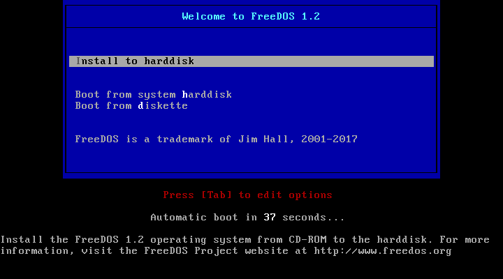
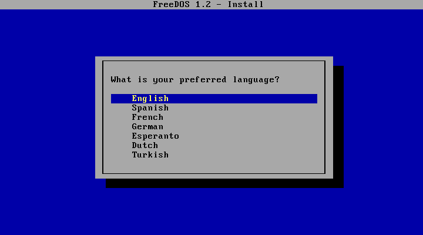
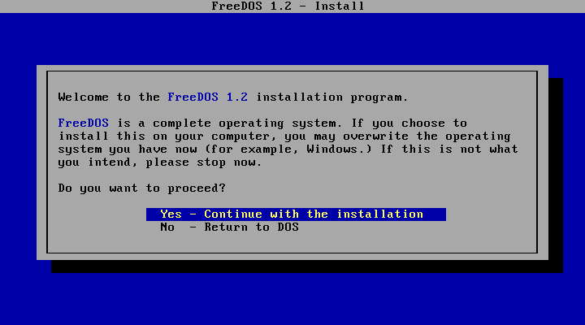
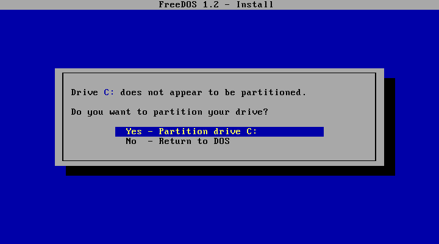
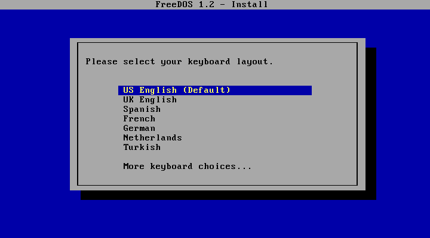
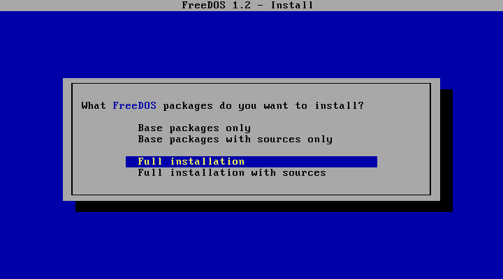
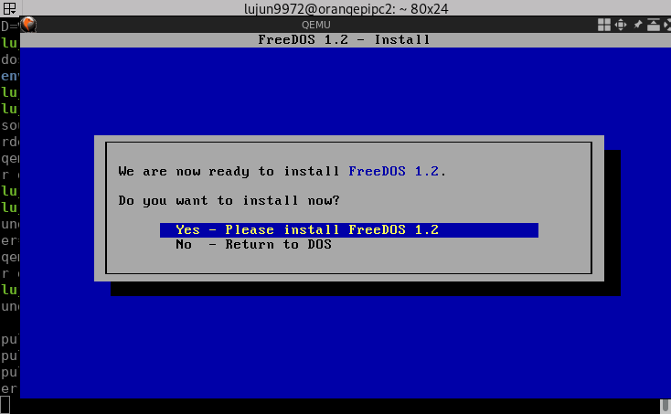
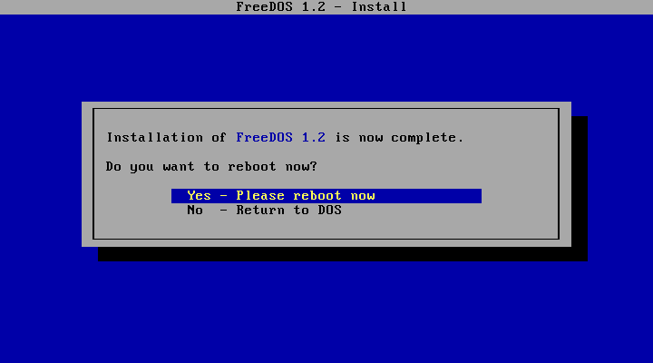
不过，由于microSD卡IO很慢，因此安装过程会花很长的时间。
安装好后，通过修改上面命令中的 -boot order=d 为 -boot order=c 来指定从c盘启动，就能进入DOS了
qemu-system-i386 -m 16 -k en-us -rtc base=localtime -soundhw sb16,adlib,pcspk -device cirrus-vga -hda dos.img -cdrom FD12CD.iso -boot order=c
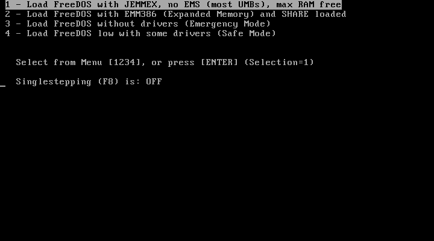
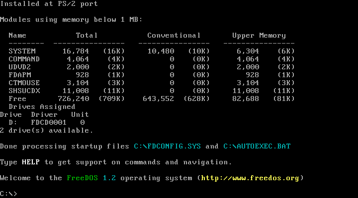
FeeDOS包含很多游戏和应用，可以通过 FDIMPLES 来安装
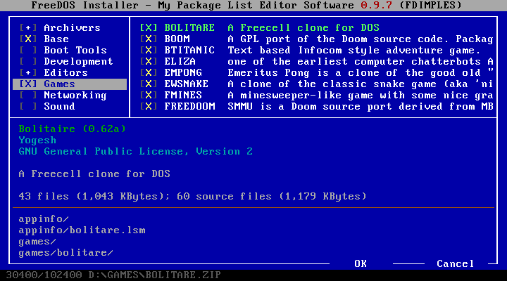
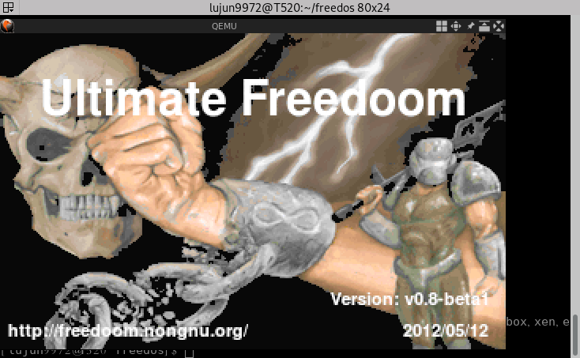
与外部系统交换文件
使用 -drive 选项可以很方便地把外部系统的一个目录挂载成虚拟机中的一块磁盘。
比如通过在启动命令后加入 -drive file=fat:rw:dosfiles 就能把 dosfiles 目录挂载成虚拟机中的一块FAT格式的磁盘。
qemu-system-i386 -m 16 -k en-us -rtc base=localtime -soundhw sb16,adlib,pcspk -device cirrus-vga -hda dos.img -drive file=fat:rw:dosfiles/ -boot order=c
为什么不用VirtualBox？
因为Armbian上根本就没有VirtualBox啊～～
为什么不用DOSBOX？
如果你只是想玩DOS游戏的话，那么DOSBOX会是个不错的选择。但是它对DOS应用程序的支持就没那么好了。
而且相对来说在虚拟机中安装完整的DOS环境能提供比DOSBOX多得多的自由度。